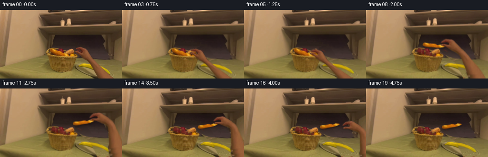
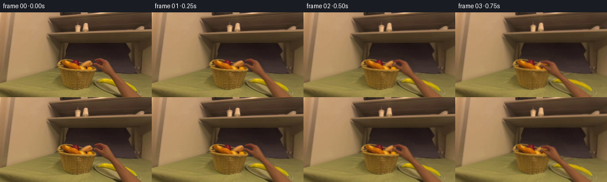

CODING AGENTS AS PIXEL WORLD MODELS
traex/GPT-6-Astra · common50_0018
点击播放 · 原生 RGB 像素
逐轮保存的候选
回放视频、检查图与代码变化。
每份候选均可单独播放。实际图片检查记录在下方工具轨迹中。
候选 01播放与检查图
点击播放 · 原生 RGB 像素


展开代码变化
--- 上一保存版本
+++ 本次保存版本
@@ -0,0 +1,248 @@
+"""Generate the egocentric pickup from source RGB pixels and analytic image warps.
+No models, network, or external scene assets are used.
+"""
+from pathlib import Path
+import numpy as np
+from PIL import Image, ImageDraw, ImageFilter
+import cv2
+from scipy.ndimage import gaussian_filter, distance_transform_edt
+from scipy.interpolate import LinearNDInterpolator
+from artifact_io import save
+
+ROOT = Path(__file__).resolve().parent
+H, W = 144, 256
+EXT = 220
+
+def polygon_mask(points, height=H, width=W, ss=4):
+ im = Image.new('L', (width*ss, height*ss))
+ ImageDraw.Draw(im).polygon([(round(x*ss),round(y*ss)) for x,y in points], fill=255)
+ return np.asarray(im.resize((width,height),Image.Resampling.LANCZOS)).astype(np.float32)/255
+
+def blend(dst, rgb, alpha):
+ return dst*(1-alpha[...,None])+rgb*alpha[...,None]
+
+def smooth(x):
+ x=np.clip(x,0,1)
+ return x*x*(3-2*x)
+
+HAND_OUTLINE = [
+ (166.0,76.8),(169.8,77.2),(173.6,78.9),(177.4,80.0),
+ (180.5,81.6),(183.0,84.0),(184.7,86.9),(186.6,89.8),
+ (188.7,93.2),(191.3,97.0),(193.3,100.2),(196.4,104.0),
+ (200.5,108.2),(203.4,112.0),(207.0,115.3),(211.1,120.0),
+ (215.4,123.8),(220.2,128.1),(225.1,132.0),(229.4,136.0),
+ (234.0,140.5),(238.5,144.5),(274.5,193),(296,220),
+ (254,220),(233,191),(206,144.5),(203.5,140.1),(202.0,135.8),
+ (199.8,131.0),(197.1,126.9),(195.0,122.1),(193.6,118.7),
+ (190.8,114.2),(187.6,110.3),(184.0,107.6),(180.0,104.6),
+ (176.0,102.2),(172.9,99.5),(170.1,97.0),(168.1,94.3),
+ (165.2,92.0),(161.3,90.0),(158.1,88.8),(156.4,87.1),
+ (157.3,85.7),(159.5,85.1),(162.5,85.7),(165.1,87.3),
+ (167.8,88.4),(170.8,89.6),(172.6,89.9),(172.4,87.0),
+ (170.7,84.9),(168.3,83.6),(165.3,83.0),(161.8,82.8),
+ (159.0,82.2),(157.8,80.9),(158.7,79.7),(161.0,78.6),
+ (163.4,77.8)
+]
+BREAD_OUTLINE = [
+ (108.8,81.1),(111.4,81.8),(115.4,83.5),(117.2,84.6),
+ (120.6,85.0),(125.0,86.5),(128.7,87.6),(130.8,89.0),
+ (131.7,90.4),(134.0,91.3),(136.6,91.0),(139.0,91.3),
+ (141.0,92.5),(142.4,93.7),(144.8,95.1),(145.6,96.6),
+ (143.7,97.2),(140.4,97.1),(136.6,96.8),(132.9,96.0),
+ (129.0,94.9),(125.2,93.8),(120.9,92.6),(116.4,91.5),
+ (112.2,90.3),(109.1,89.0),(107.2,87.6),(105.1,85.5),
+ (105.4,83.6),(106.8,82.1)
+]
+
+
+def prepare(src):
+ rng=np.random.default_rng(4201)
+ yy,xx=np.mgrid[:H,:W]
+ hm=polygon_mask(HAND_OUTLINE,EXT)
+ bm=polygon_mask(BREAD_OUTLINE)
+ # Recover stationary surfaces hidden by the starting hand. The upper
+ # surface is the charcoal-grey plate; the lower one is the tabletop.
+ clean=src.astype(np.float32).copy()
+ table=np.zeros_like(clean)
+ for y in range(H):
+ # Texture is copied from the unobstructed right-hand part of the table.
+ sy=min(143,max(105,y))
+ row=src[sy,234:255].astype(float)
+ for x in range(W):
+ table[y,x]=row[(x+3*y)%len(row)]
+ # Correct small surface irradiance gradients rather than using a flat fill.
+ table += ((xx-240)*.012)[...,None]*np.array([1.,.8,.45])
+ pgood=((yy>=54)&(yy<=75)&(xx>=117)&(xx<211)) | ((yy>=75)&(yy<101)&(xx>=198)&(xx<=220))
+ # Quadratic diffuse illumination fit for the plate, with its own RGB texture.
+ X=(xx-170)/60.;Y=(yy-75)/30.
+ features=np.stack([X*0+1,X,Y,X*Y,Y*Y,X*X],axis=-1)
+ coeff=np.linalg.lstsq(features[pgood],src[pgood].astype(float),rcond=None)[0]
+ plate=features@coeff
+ for y in range(H):
+ ry=min(100,max(54,y))
+ sample=src[ry,199:220].astype(float)
+ tex=sample-sample.mean(axis=0)
+ plate[y]+=tex[(np.arange(W)+2*y)%len(tex)]*.6
+ # The lower edge of the plate is rounded in perspective.
+ bottom=103.0 - .009*np.maximum(196-xx,0)**2
+ plate_a=np.clip((bottom-yy+.4)/1.6,0,1)
+ restore=blend(table,plate,plate_a)
+ # The partly occluded yellow banana beside the basket is reconstructed
+ # only where the original wrist hid it, using RGB from the visible peel.
+ banana=[(165,117),(167,114.6),(174,112.6),(182,112.5),
+ (193,113.7),(204,115.7),(214,120.1),(223.5,126),
+ (230.5,132.8),(228,134.0),(221,129.8),(213,125.6),
+ (203,121.9),(192,120.8),(181,119),(170,118.5)]
+ ba=polygon_mask(banana)
+ # A curved peel keeps the highlight on its upper edge.
+ cy=115.4+.006*np.maximum(xx-181,0)**2+.06*np.maximum(xx-188,0)
+ rad=yy-cy
+ bcol=np.empty_like(clean)
+ yellow=np.array([201,165,9.0])
+ bcol[:]=yellow
+ light=8*np.exp(-((rad+.5)/1.1)**2)-15*np.maximum(rad,0)
+ bcol+=light[...,None]*np.array([1,.9,.09])
+ bcol+=rng.normal(0,.85,(H,W,1))*np.array([1,.8,.18])
+ restore=blend(restore,np.clip(bcol,0,255),ba)
+ # A narrow soft disocclusion band removes the old contact shadow too.
+ removal=cv2.dilate(hm[:H],np.ones((3,3),np.uint8))
+ removal=np.maximum(hm[:H],gaussian_filter(removal,.45))
+ removal=np.clip(removal,0,1)
+ nohand=blend(clean,restore,removal)
+
+ # Reconstruct the basket lining behind the bread, without touching the
+ # other rolls or the wicker rim. All texture derives from the source.
+ dil=cv2.dilate((bm>.18).astype(np.uint8),np.ones((3,3),np.uint8))
+ inp=cv2.inpaint(np.uint8(np.clip(nohand,0,255)),dil*255,3,cv2.INPAINT_TELEA).astype(float)
+ # Locally synthesized continuation of the red-brown basket liner.
+ crop=src[81:86,121:132].astype(float)
+ lining=np.zeros_like(clean)
+ for y in range(H):
+ for x in range(W):
+ u=int((x-105)*.66)%11
+ v=int((y-81)*.60+.12*(x-105))%5
+ lining[y,x]=crop[v,u]
+ lining=gaussian_filter(lining,(.5,.5,0))
+ # The cavity darkens at its lower edge under the basket's front lip.
+ lower=smooth((yy-(86+.25*(xx-110)))/5.)
+ lining=lining*(1-.30*lower[...,None])
+ lining=lining*.83+np.array([13,7,1])
+ center=distance_transform_edt(dil)
+ fa=np.clip(center/2,0,1)*.85
+ patch=blend(inp,lining,fa)
+ bread_removal=np.maximum(bm,gaussian_filter(dil.astype(float),.40))
+ empty=blend(nohand,patch,bread_removal)
+
+ # Extend the forearm texture outside the frame for physically continuous
+ # image warps when the hand moves toward the plate.
+ hs=np.zeros((EXT,W,3),np.float32)
+ hs[:H]=src
+ for y in range(H,EXT):
+ centerx=222.2+(y-143)*.74
+ for x in range(W):
+ sx=int(np.clip(222+(x-centerx),205,237))
+ sy=136+(y%8)
+ sx=int(np.clip(sx-(143-sy)*.85,203,237))
+ hs[y,x]=src[sy,sx]
+ return nohand,empty,hs,hm,bm
+
+
+def warp_bread(src, mask, dx,dy,angle,scale):
+ pivot=np.array([138.,92.])
+ a=np.deg2rad(angle)
+ R=np.array([[np.cos(a),-np.sin(a)],[np.sin(a),np.cos(a)]])*scale
+ M=np.c_[R,pivot+np.array([dx,dy])-R@pivot].astype(np.float32)
+ alpha=cv2.warpAffine(mask,M,(W,H),flags=cv2.INTER_LINEAR)
+ premult=cv2.warpAffine(src*mask[...,None],M,(W,H),flags=cv2.INTER_LINEAR)
+ rgb=premult/np.maximum(alpha[...,None],1e-5)
+ return rgb,alpha
+
+
+def warp_hand(src, mask, reach, close, breadpose, withdraw):
+ dx,dy,angle,scale=breadpose
+ gx,gy=np.meshgrid(np.linspace(137,255,33),np.linspace(64,219,40))
+ pts=np.c_[gx.ravel(),gy.ravel()]
+ p=pts.copy()
+ # Finger flexion closes the existing index finger and thumb on the crust.
+ tip=np.exp(-((p[:,0]-162)/10)**2-((p[:,1]-80.8)/3.4)**2)
+ thumb=np.exp(-((p[:,0]-159.8)/7)**2-((p[:,1]-87.0)/2.1)**2)
+ p[:,1]+=close*(1.65*tip-.6*thumb)
+ p[:,0]-=close*.8*tip
+ p+=np.array([-18.,5.])*reach
+ pivot=np.array([138.,92.])
+ a=np.deg2rad(angle)
+ rot=np.array([[np.cos(a),-np.sin(a)],[np.sin(a),np.cos(a)]])*scale
+ target=(p-pivot)@rot.T+pivot+np.array([dx,dy])
+ target+=np.array(withdraw)
+ # The wrist bends while the lower forearm remains attached off screen.
+ w=np.interp(pts[:,1],[64,99,110,125,145,178,219],[1,1,.90,.65,.36,.12,.04])
+ # Withdrawal moves the complete limb, including its offscreen attachment.
+ wd=np.array(withdraw)
+ target=pts+(target-pts-wd)*w[:,None]+wd
+ inv=LinearNDInterpolator(target,pts,fill_value=-100)
+ yy,xx=np.mgrid[:H,:W]
+ mapping=inv(xx,yy).astype(np.float32)
+ alpha=cv2.remap(mask,mapping[...,0],mapping[...,1],cv2.INTER_LINEAR,borderMode=cv2.BORDER_CONSTANT)
+ rgb=cv2.remap(src*mask[...,None],mapping[...,0],mapping[...,1],cv2.INTER_LINEAR,borderMode=cv2.BORDER_CONSTANT)
+ rgb/=np.maximum(alpha[...,None],1e-5)
+ return rgb,alpha
+
+
+def main():
+ src=np.array(Image.open(ROOT/'first_frame.png').convert('RGB'),dtype=np.uint8)
+ nohand,empty,handtex,handmask,breadmask=prepare(src)
+ # pickup, lift, transport, decelerate, lower, release, withdraw
+ poses=[
+ (0,0,0,1),(0,0,0,1),(0,0,0,1),(0,0,0,1),
+ (0,0,0,1),(0,0,0,1),(2,-4,-3,1.02),(8,-11,-7,1.06),
+ (18,-18,-12,1.10),(31,-24,-18,1.11),(43,-27,-23,1.09),
+ (50,-25,-26,1.06),(53,-21,-27,1.02),(54,-18,-27,1.0),
+ (54,-18,-27,1.0),(54,-18,-27,1.0),(54,-18,-27,1.0),
+ (54,-18,-27,1.0),(54,-18,-27,1.0),(54,-18,-27,1.0)]
+ reaches=[0,.14,.42,.78,1,1,1,1,1,1,1,1,1,1,1,1,1,1,1,1]
+ closes=[0,0,0,.15,.6,1,1,1,1,1,1,1,1,.9,.55,0,0,0,0,0]
+ withdrawal=[(0,0)]*14+[(.6,0),(4,2),(15,10),(32,25),(57,43),(87,67)]
+ frames=[src]
+ yy,xx=np.mgrid[:H,:W]
+ for i in range(1,20):
+ pose=poses[i]
+ frame=(nohand if i<=5 else empty).copy()
+ hrgb,ha=warp_hand(handtex,handmask,reaches[i],closes[i],pose,withdrawal[i])
+ # Soft hand shadow falls on the nearby surfaces, not on the camera.
+ height=[0,0,0,0,0,0,3,5,7,9,10,7,3,0,0,1,3,4,5,5][i]
+ hshadow=cv2.warpAffine(ha,np.float32([[1,0,-.3],[0,1,1.3+height*.25]]),(W,H))
+ hshadow=gaussian_filter(hshadow,1.0+height*.15)*(.18-height*.004)
+ frame*=1-hshadow[...,None]
+ if i>5:
+ brgb,ba=warp_bread(src.astype(float),breadmask,*pose)
+ # The elevated loaf casts a diffuse shadow which tightens as it lands.
+ bs=cv2.warpAffine(ba,np.float32([[1,0,.7],[0,1,1.0+height*.35]]),(W,H))
+ bs=gaussian_filter(bs,.65+height*.16)*(.34-height*.009)
+ frame*=1-bs[...,None]
+ # Minor rise in reflected light while the crust is above the dark basket.
+ light=1+(.025*np.sin(np.pi*np.clip((i-5)/9,0,1)))
+ brgb=np.clip(brgb*light,0,255)
+ frame=blend(frame,brgb,ba)
+ frame=blend(frame,hrgb,ha)
+ # Subpixel egocentric settling; the first frame is never resampled.
+ tx=.18*np.sin(i*.78)
+ ty=-.55*np.sin(np.pi*min(i,14)/14)+.10*np.sin(i*1.13)
+ M=np.float32([[1,0,tx],[0,1,ty]])
+ frame=cv2.warpAffine(frame,M,(W,H),flags=cv2.INTER_LINEAR,borderMode=cv2.BORDER_REFLECT_101)
+ frames.append(np.uint8(np.clip(np.rint(frame),0,255)))
+ frames=np.stack(frames)
+ assert frames.dtype==np.uint8 and frames.shape==(20,144,256,3)
+ assert np.array_equal(frames[0],src)
+ save(frames,ROOT)
+ # Numeric and local intermediate output for reproducible quality checks.
+ tmp=ROOT/'.tmp'
+ tmp.mkdir(exist_ok=True)
+ Image.fromarray(np.uint8(np.clip(nohand,0,255))).save(tmp/'stationary_no_hand.png')
+ Image.fromarray(np.uint8(np.clip(empty,0,255))).save(tmp/'basket_disoccluded.png')
+ Image.fromarray(np.uint8(handmask[:H]*255)).save(tmp/'hand_alpha.png')
+ Image.fromarray(np.uint8(breadmask*255)).save(tmp/'bread_alpha.png')
+ print('Saved 20 RGB frames, 256 x 144, 4 fps; frame 00 verified exact.')
+ print('Mean frame differences:',np.abs(np.diff(frames.astype(float),axis=0)).mean(axis=(1,2,3)).round(3).tolist())
+
+if __name__=='__main__':
+ main()
可观测工具轨迹
实际执行的命令与返回图片。
命令 1exit 0
/bin/bash -lc "ls -la && cat prompt.txt && printf '\\n---RULES---\\n' && cat GENERATION_RULES.md"
命令 2exit 0
/bin/bash -lc "cat task_spec.json && cat artifact_io.py && python - <<'PY'
from PIL import Image
import numpy as np
im=np.asarray(Image.open('first_frame.png').convert('RGB'))
print('shape',im.shape)
pal={'w':(230,230,220),'l':(175,170,155),'g':(115,115,105),'d':(65,62,53),'k':(25,24,20),'s':(180,123,91),'t':(124,78,46),'b':(193,144,55),'y':(226,185,111),'r':(132,40,31),'v':(55,76,48)}
a=np.array(list(pal.values())); keys=list(pal)
x=np.asarray(Image.fromarray(im).resize((128,72)))
labels=np.argmin(np.sum((x[:,:,None].astype(float)-a[None,None])**2,axis=3),axis=2)
for i,row in enumerate(labels):print(f'{i*2:03d} '+''.join(keys[t] for t in row))
PY"命令 3exit 0
/bin/bash -lc "python - <<'PY'
import numpy as np
from PIL import Image
im=np.array(Image.open('first_frame.png'))
a=np.array(Image.fromarray(im).resize((128,72))).astype(float)
l=a@np.array([.2126,.7152,.0722]);chars=' .,:;irsXA253hMHGS#9B&@'
for y,row in enumerate(l):print(f'{y*2:03d}'+''.join(chars[int(v/256*len(chars))] for v in row))
print('RGB grid 8x8')
for y in range(4,144,8): print(y,' '.join('%02x%02x%02x'%tuple(im[y,x]) for x in range(4,256,8)))
PY"命令 4exit 0
/bin/bash -lc "python - <<'PY'
from PIL import Image
import numpy as np
im=np.array(Image.open('first_frame.png'))
# foreground grayscale doubled coordinates in text
c=' .,:;irsXA253hMHGS#9B&@'
z=im[76:144,72:232].astype(float)@np.array([.2126,.7152,.0722])
for y,row in enumerate(z):print(f'{y+76:03d} '+''.join(c[int(v/256*len(c))]*1 for v in row))
# more color specific bread foreground
print('COLOR CATEGORIES')
pal={'w':(211,183,123),'a':(171,139,83),'m':(144,129,64),'g':(122,111,55),'j':(112,89,30),'d':(75,63,37),'k':(35,25,22),'r':(95,37,21),'R':(128,56,23),'t':(129,80,42),'T':(153,93,45),'o':(184,93,8),'b':(211,131,22),'y':(227,165,61),'Y':(214,179,5)}
a=np.array(list(pal.values()));keys=list(pal)
z=im[76:144,72:232]
labels=np.argmin(np.sum((z[:,:,None].astype(float)-a[None,None])**2,axis=3),axis=2)
for y,row in enumerate(labels):print(f'{y+76:03d} '+''.join(keys[t] for t in row))
PY"命令 5exit 0
/bin/bash -lc "python - <<'PY'
from PIL import Image
import numpy as np
im=np.array(Image.open('first_frame.png')).astype(float)
# remove overall cast; classification with hue and normalized rgb ascii
# sample grayscale at several row ranges with more contrast
for x0,y0,x1,y1,scale in [(0,80,256,144,2),(80,78,182,103,1),(140,100,256,144,1)]:
print('\\nregion',x0,y0,x1,y1)
a=im[y0:y1:scale,x0:x1:scale]; s=a.sum(-1); d=a[...,1]/(a[...,0]+1e-4)
chars=' .:-=+*#%@'
for i,row in enumerate(d): print(f'{y0+i*scale:03d} '+''.join(chars[int(np.clip((v-.32)/.65,0,.999)*len(chars))] for v in row))
print('line values')
for y in [90,100,110,120,130]:
print(y,[(x,tuple(map(int,im[y,x]))) for x in range(0,256,4)])
PY"命令 6exit 0
/bin/bash -lc "python - <<'PY'
import numpy as np
from PIL import Image
im=np.array(Image.open('first_frame.png')).astype(float)
r,g,b=np.moveaxis(im,-1,0)
for y in range(68,144):
s=''
for x in range(88,238):
c=' '
if r[y,x]>60 and g[y,x]/r[y,x]<.69 and b[y,x]/r[y,x]>.22: c='o'
if r[y,x]>75 and .54<g[y,x]/r[y,x]<.69 and .29<b[y,x]/r[y,x]<.49:c='S'
if r[y,x]>150 and g[y,x]/r[y,x]<.71 and b[y,x]/r[y,x]<.3:c='B'
if r[y,x]>175 and g[y,x]/r[y,x]>.7 and b[y,x]/r[y,x]<.4:c='Y'
s+=c
print(f'{y:03} '+s)
PY"命令 7exit 0
/bin/bash -lc "python - <<'PY'
import importlib.util
for m in ['numpy','PIL','scipy','cv2']:print(m, bool(importlib.util.find_spec(m)))
from PIL import Image
import numpy as np
im=np.array(Image.open('first_frame.png'))
# sampled rows of foreground with coordinates
for y in [78,80,82,84,86,88,90,92,94,96,98]:
print('y=',y)
print(' '.join(f'{x}:{im[y,x,0]:02x}{im[y,x,1]:02x}{im[y,x,2]:02x}' for x in range(96,192,2)))
PY"命令 8exit 0
/bin/bash -lc "python - <<'PY'
from PIL import Image
import numpy as np
im=np.array(Image.open('first_frame.png')).astype(float)
r,g,b=np.moveaxis(im,-1,0)
for y in range(109,138):
m=(r[y]>145)&(g[y]>110)&(b[y]<50)&(g[y]/np.maximum(r[y],1)>.68)
xs=np.where(m&(np.arange(256)>155))[0]
print(y, xs.tolist())
PY"命令 9exit 0
/bin/bash -lc "python - <<'PY'
import numpy as np
from PIL import Image
from scipy.ndimage import gaussian_filter
im=np.array(Image.open('first_frame.png')).astype(float)
# Surface-normal-like edge gradient plot identifies topology in desk region
im=gaussian_filter(im,(.6,.6,0));l=im@np.array([.21,.72,.07]);gx=np.gradient(l,axis=1);gy=np.gradient(l,axis=0);grad=np.sqrt(gx*gx+gy*gy)
for y in range(72,144):
out=''
for x in range(0,256,2):
if grad[y,x]<2.4: c=' '
elif grad[y,x]<5:c='.'
elif abs(gx[y,x])>abs(gy[y,x])*2:c='|'
elif abs(gy[y,x])>abs(gx[y,x])*2:c='-'
elif gy[y,x]*gx[y,x]>0:c='\\\\'
else:c='/'
out+=c
print(f'{y:03d} {out}')
PY"命令 10exit 0
/bin/bash -lc "cat > .tmp/analyze.py <<'PY'
import numpy as np
from PIL import Image
im=np.array(Image.open('first_frame.png')).astype(float)
# dark neutral plate segmentation: raw b:r > .53 at x110:222, y49:105
for y in range(48,108,2):
out=''
for x in range(86,242):
r,g,b=im[y,x]
c=' '
if b/max(r,1)>.56: c='p'
if g/max(r,1)>.81: c='t'
if r>80 and g/r<.68 and b/r>.28:c='h'
if r>145 and b/r<.27:c='B'
out+=c
print(y,out)
PY
python .tmp/analyze.py"命令 11exit 0
/bin/bash -lc "python - <<'PY'
import numpy as np
from PIL import Image
im=np.array(Image.open('first_frame.png')).astype(float)
r,g,b=np.moveaxis(im,-1,0)
for y in range(76,144):
good=(r[y]>43)&(g[y]/r[y]<.735)&(b[y]/r[y]>.26)&(b[y]/r[y]<.57)&(np.arange(256)>=157)
if y<85:good&=(np.arange(256)>=158)
inds=np.where(good)[0];chunks=np.split(inds,np.where(np.diff(inds)>1)[0]+1)
print(y,[(z[0],z[-1]) for z in chunks if len(z)>0])
PY"命令 12exit 0
/bin/bash -lc "cat > generate.py <<'PY'
\"\"\"Generate the egocentric pickup from source RGB pixels and analytic image warps.
No models, network, or external scene assets are used.
\"\"\"
from pathlib import Path
import numpy as np
from PIL import Image, ImageDraw, ImageFilter
import cv2
from scipy.ndimage import gaussian_filter, distance_transform_edt
from scipy.interpolate import LinearNDInterpolator
from artifact_io import save
ROOT = Path(__file__).resolve().parent
H, W = 144, 256
EXT = 220
def polygon_mask(points, height=H, width=W, ss=4):
im = Image.new('L', (width*ss, height*ss))
ImageDraw.Draw(im).polygon([(round(x*ss),round(y*ss)) for x,y in points], fill=255)
return np.asarray(im.resize((width,height),Image.Resampling.LANCZOS)).astype(np.float32)/255
def blend(dst, rgb, alpha):
return dst*(1-alpha[...,None])+rgb*alpha[...,None]
def smooth(x):
x=np.clip(x,0,1)
return x*x*(3-2*x)
HAND_OUTLINE = [
(166.0,76.8),(169.8,77.2),(173.6,78.9),(177.4,80.0),
(180.5,81.6),(183.0,84.0),(184.7,86.9),(186.6,89.8),
(188.7,93.2),(191.3,97.0),(193.3,100.2),(196.4,104.0),
(200.5,108.2),(203.4,112.0),(207.0,115.3),(211.1,120.0),
(215.4,123.8),(220.2,128.1),(225.1,132.0),(229.4,136.0),
(234.0,140.5),(238.5,144.5),(274.5,193),(296,220),
(254,220),(233,191),(206,144.5),(203.5,140.1),(202.0,135.8),
(199.8,131.0),(197.1,126.9),(195.0,122.1),(193.6,118.7),
(190.8,114.2),(187.6,110.3),(184.0,107.6),(180.0,104.6),
(176.0,102.2),(172.9,99.5),(170.1,97.0),(168.1,94.3),
(165.2,92.0),(161.3,90.0),(158.1,88.8),(156.4,87.1),
(157.3,85.7),(159.5,85.1),(162.5,85.7),(165.1,87.3),
(167.8,88.4),(170.8,89.6),(172.6,89.9),(172.4,87.0),
(170.7,84.9),(168.3,83.6),(165.3,83.0),(161.8,82.8),
(159.0,82.2),(157.8,80.9),(158.7,79.7),(161.0,78.6),
(163.4,77.8)
]
BREAD_OUTLINE = [
(108.8,81.1),(111.4,81.8),(115.4,83.5),(117.2,84.6),
(120.6,85.0),(125.0,86.5),(128.7,87.6),(130.8,89.0),
(131.7,90.4),(134.0,91.3),(136.6,91.0),(139.0,91.3),
(141.0,92.5),(142.4,93.7),(144.8,95.1),(145.6,96.6),
(143.7,97.2),(140.4,97.1),(136.6,96.8),(132.9,96.0),
(129.0,94.9),(125.2,93.8),(120.9,92.6),(116.4,91.5),
(112.2,90.3),(109.1,89.0),(107.2,87.6),(105.1,85.5),
(105.4,83.6),(106.8,82.1)
]
def prepare(src):
rng=np.random.default_rng(4201)
yy,xx=np.mgrid[:H,:W]
hm=polygon_mask(HAND_OUTLINE,EXT)
bm=polygon_mask(BREAD_OUTLINE)
# Recover stationary surfaces hidden by the starting hand. The upper
# surface is the charcoal-grey plate; the lower one is the tabletop.
clean=src.astype(np.float32).copy()
table=np.zeros_like(clean)
for y in range(H):
# Texture is copied from the unobstructed right-hand part of the table.
sy=min(143,max(105,y))
row=src[sy,234:255].astype(float)
for x in range(W):
table[y,x]=row[(x+3*y)%len(row)]
# Correct small surface irradiance gradients rather than using a flat fill.
table += ((xx-240)*.012)[...,None]*np.array([1.,.8,.45])
pgood=((yy>=54)&(yy<=75)&(xx>=117)&(xx<211)) | ((yy>=75)&(yy<101)&(xx>=198)&(xx<=220))
# Quadratic diffuse illumination fit for the plate, with its own RGB texture.
X=(xx-170)/60.;Y=(yy-75)/30.
features=np.stack([X*0+1,X,Y,X*Y,Y*Y,X*X],axis=-1)
coeff=np.linalg.lstsq(features[pgood],src[pgood].astype(float),rcond=None)[0]
plate=features@coeff
for y in range(H):
ry=min(100,max(54,y))
sample=src[ry,199:220].astype(float)
tex=sample-sample.mean(axis=0)
plate[y]+=tex[(np.arange(W)+2*y)%len(tex)]*.6
# The lower edge of the plate is rounded in perspective.
bottom=103.0 - .009*np.maximum(196-xx,0)**2
plate_a=np.clip((bottom-yy+.4)/1.6,0,1)
restore=blend(table,plate,plate_a)
# The partly occluded yellow banana beside the basket is reconstructed
# only where the original wrist hid it, using RGB from the visible peel.
banana=[(165,117),(167,114.6),(174,112.6),(182,112.5),
(193,113.7),(204,115.7),(214,120.1),(223.5,126),
(230.5,132.8),(228,134.0),(221,129.8),(213,125.6),
(203,121.9),(192,120.8),(181,119),(170,118.5)]
ba=polygon_mask(banana)
# A curved peel keeps the highlight on its upper edge.
cy=115.4+.006*np.maximum(xx-181,0)**2+.06*np.maximum(xx-188,0)
rad=yy-cy
bcol=np.empty_like(clean)
yellow=np.array([201,165,9.0])
bcol[:]=yellow
light=8*np.exp(-((rad+.5)/1.1)**2)-15*np.maximum(rad,0)
bcol+=light[...,None]*np.array([1,.9,.09])
bcol+=rng.normal(0,.85,(H,W,1))*np.array([1,.8,.18])
restore=blend(restore,np.clip(bcol,0,255),ba)
# A narrow soft disocclusion band removes the old contact shadow too.
removal=cv2.dilate(hm[:H],np.ones((3,3),np.uint8))
removal=np.maximum(hm[:H],gaussian_filter(removal,.45))
removal=np.clip(removal,0,1)
nohand=blend(clean,restore,removal)
# Reconstruct the basket lining behind the bread, without touching the
# other rolls or the wicker rim. All texture derives from the source.
dil=cv2.dilate((bm>.18).astype(np.uint8),np.ones((3,3),np.uint8))
inp=cv2.inpaint(np.uint8(np.clip(nohand,0,255)),dil*255,3,cv2.INPAINT_TELEA).astype(float)
# Locally synthesized continuation of the red-brown basket liner.
crop=src[81:86,121:132].astype(float)
lining=np.zeros_like(clean)
for y in range(H):
for x in range(W):
u=int((x-105)*.66)%11
v=int((y-81)*.60+.12*(x-105))%5
lining[y,x]=crop[v,u]
lining=gaussian_filter(lining,(.5,.5,0))
# The cavity darkens at its lower edge under the basket's front lip.
lower=smooth((yy-(86+.25*(xx-110)))/5.)
lining=lining*(1-.30*lower[...,None])
lining=lining*.83+np.array([13,7,1])
center=distance_transform_edt(dil)
fa=np.clip(center/2,0,1)*.85
patch=blend(inp,lining,fa)
bread_removal=np.maximum(bm,gaussian_filter(dil.astype(float),.40))
empty=blend(nohand,patch,bread_removal)
# Extend the forearm texture outside the frame for physically continuous
# image warps when the hand moves toward the plate.
hs=np.zeros((EXT,W,3),np.float32)
hs[:H]=src
for y in range(H,EXT):
centerx=222.2+(y-143)*.74
for x in range(W):
sx=int(np.clip(222+(x-centerx),205,237))
sy=136+(y%8)
sx=int(np.clip(sx-(143-sy)*.85,203,237))
hs[y,x]=src[sy,sx]
return nohand,empty,hs,hm,bm
def warp_bread(src, mask, dx,dy,angle,scale):
pivot=np.array([138.,92.])
a=np.deg2rad(angle)
R=np.array([[np.cos(a),-np.sin(a)],[np.sin(a),np.cos(a)]])*scale
M=np.c_[R,pivot+np.array([dx,dy])-R@pivot].astype(np.float32)
alpha=cv2.warpAffine(mask,M,(W,H),flags=cv2.INTER_LINEAR)
premult=cv2.warpAffine(src*mask[...,None],M,(W,H),flags=cv2.INTER_LINEAR)
rgb=premult/np.maximum(alpha[...,None],1e-5)
return rgb,alpha
def warp_hand(src, mask, reach, close, breadpose, withdraw):
dx,dy,angle,scale=breadpose
gx,gy=np.meshgrid(np.linspace(137,255,33),np.linspace(64,219,40))
pts=np.c_[gx.ravel(),gy.ravel()]
p=pts.copy()
# Finger flexion closes the existing index finger and thumb on the crust.
tip=np.exp(-((p[:,0]-162)/10)**2-((p[:,1]-80.8)/3.4)**2)
thumb=np.exp(-((p[:,0]-159.8)/7)**2-((p[:,1]-87.0)/2.1)**2)
p[:,1]+=close*(1.65*tip-.6*thumb)
p[:,0]-=close*.8*tip
p+=np.array([-18.,5.])*reach
pivot=np.array([138.,92.])
a=np.deg2rad(angle)
rot=np.array([[np.cos(a),-np.sin(a)],[np.sin(a),np.cos(a)]])*scale
target=(p-pivot)@rot.T+pivot+np.array([dx,dy])
target+=np.array(withdraw)
# The wrist bends while the lower forearm remains attached off screen.
w=np.interp(pts[:,1],[64,99,110,125,145,178,219],[1,1,.90,.65,.36,.12,.04])
# Withdrawal moves the complete limb, including its offscreen attachment.
wd=np.array(withdraw)
target=pts+(target-pts-wd)*w[:,None]+wd
inv=LinearNDInterpolator(target,pts,fill_value=-100)
yy,xx=np.mgrid[:H,:W]
mapping=inv(xx,yy).astype(np.float32)
alpha=cv2.remap(mask,mapping[...,0],mapping[...,1],cv2.INTER_LINEAR,borderMode=cv2.BORDER_CONSTANT)
rgb=cv2.remap(src*mask[...,None],mapping[...,0],mapping[...,1],cv2.INTER_LINEAR,borderMode=cv2.BORDER_CONSTANT)
rgb/=np.maximum(alpha[...,None],1e-5)
return rgb,alpha
def main():
src=np.array(Image.open(ROOT/'first_frame.png').convert('RGB'),dtype=np.uint8)
nohand,empty,handtex,handmask,breadmask=prepare(src)
# pickup, lift, transport, decelerate, lower, release, withdraw
poses=[
(0,0,0,1),(0,0,0,1),(0,0,0,1),(0,0,0,1),
(0,0,0,1),(0,0,0,1),(2,-4,-3,1.02),(8,-11,-7,1.06),
(18,-18,-12,1.10),(31,-24,-18,1.11),(43,-27,-23,1.09),
(50,-25,-26,1.06),(53,-21,-27,1.02),(54,-18,-27,1.0),
(54,-18,-27,1.0),(54,-18,-27,1.0),(54,-18,-27,1.0),
(54,-18,-27,1.0),(54,-18,-27,1.0),(54,-18,-27,1.0)]
reaches=[0,.14,.42,.78,1,1,1,1,1,1,1,1,1,1,1,1,1,1,1,1]
closes=[0,0,0,.15,.6,1,1,1,1,1,1,1,1,.9,.55,0,0,0,0,0]
withdrawal=[(0,0)]*14+[(.6,0),(4,2),(15,10),(32,25),(57,43),(87,67)]
frames=[src]
yy,xx=np.mgrid[:H,:W]
for i in range(1,20):
pose=poses[i]
frame=(nohand if i<=5 else empty).copy()
hrgb,ha=warp_hand(handtex,handmask,reaches[i],closes[i],pose,withdrawal[i])
# Soft hand shadow falls on the nearby surfaces, not on the camera.
height=[0,0,0,0,0,0,3,5,7,9,10,7,3,0,0,1,3,4,5,5][i]
hshadow=cv2.warpAffine(ha,np.float32([[1,0,-.3],[0,1,1.3+height*.25]]),(W,H))
hshadow=gaussian_filter(hshadow,1.0+height*.15)*(.18-height*.004)
frame*=1-hshadow[...,None]
if i>5:
brgb,ba=warp_bread(src.astype(float),breadmask,*pose)
# The elevated loaf casts a diffuse shadow which tightens as it lands.
bs=cv2.warpAffine(ba,np.float32([[1,0,.7],[0,1,1.0+height*.35]]),(W,H))
bs=gaussian_filter(bs,.65+height*.16)*(.34-height*.009)
frame*=1-bs[...,None]
# Minor rise in reflected light while the crust is above the dark basket.
light=1+(.025*np.sin(np.pi*np.clip((i-5)/9,0,1)))
brgb=np.clip(brgb*light,0,255)
frame=blend(frame,brgb,ba)
frame=blend(frame,hrgb,ha)
# Subpixel egocentric settling; the first frame is never resampled.
tx=.18*np.sin(i*.78)
ty=-.55*np.sin(np.pi*min(i,14)/14)+.10*np.sin(i*1.13)
M=np.float32([[1,0,tx],[0,1,ty]])
frame=cv2.warpAffine(frame,M,(W,H),flags=cv2.INTER_LINEAR,borderMode=cv2.BORDER_REFLECT_101)
frames.append(np.uint8(np.clip(np.rint(frame),0,255)))
frames=np.stack(frames)
assert frames.dtype==np.uint8 and frames.shape==(20,144,256,3)
assert np.array_equal(frames[0],src)
save(frames,ROOT)
# Numeric and local intermediate output for reproducible quality checks.
tmp=ROOT/'.tmp'
tmp.mkdir(exist_ok=True)
Image.fromarray(np.uint8(np.clip(nohand,0,255))).save(tmp/'stationary_no_hand.png')
Image.fromarray(np.uint8(np.clip(empty,0,255))).save(tmp/'basket_disoccluded.png')
Image.fromarray(np.uint8(handmask[:H]*255)).save(tmp/'hand_alpha.png')
Image.fromarray(np.uint8(breadmask*255)).save(tmp/'bread_alpha.png')
print('Saved 20 RGB frames, 256 x 144, 4 fps; frame 00 verified exact.')
print('Mean frame differences:',np.abs(np.diff(frames.astype(float),axis=0)).mean(axis=(1,2,3)).round(3).tolist())
if __name__=='__main__':
main()
PY
OPENBLAS_NUM_THREADS=1 python generate.py"命令 13exit 0
/bin/bash -lc "python - <<'PY'
from PIL import Image
import numpy as np
chars=' .,:;irsXA253hMHGS#9B&@'
for i in [0,5,10,13,16,19]:
im=np.array(Image.open(f'frames/{i:02d}.png'))
print('\\nFRAME',i)
v=np.array(Image.fromarray(im[48:144,88:240]).resize((76,48))).astype(float)@np.array([.2126,.7152,.0722])
for y,row in enumerate(v):print(f'{y*2+48:03d} '+''.join(chars[int(v/256*len(chars))] for v in row))
PY"命令 14exit 0
/bin/bash -lc "python - <<'PY'
import numpy as np
from PIL import Image
im=np.array(Image.open('first_frame.png')).astype(float)
print('foreground rgb rows x32-106 step2')
for ch in range(3):
print('channel',ch)
for y in range(94,125):
print(f'{y:03d} '+ ' '.join(f'{im[y,x,ch]:3.0f}' for x in range(32,108,2)))
PY"命令 15exit 0
/bin/bash -lc "python - <<'PY'
import generate as g
import numpy as np
from PIL import Image
from scipy.ndimage import distance_transform_edt
s=np.array(Image.open('first_frame.png'))
_,_,ht,hm,bm=g.prepare(s)
poses=[(0,0,0,1),(2,-4,-3,1.02),(18,-18,-12,1.1),(43,-27,-23,1.09),(54,-18,-27,1)]
for p in poses:
_,ha=g.warp_hand(ht,hm,1,1,p,(0,0))
_,ba=g.warp_bread(s.astype(float),bm,*p)
b=ba>.5; h=ha>.5
d=distance_transform_edt(~h)
ys,xs=np.where(b)
print(p,'bread bbox',xs.min(),ys.min(),xs.max(),ys.max(),'hand distance',d[b].min(),'overlap',(b&h).sum(), 'bread pixels',b.sum())
PY"命令 16exit 0
/bin/bash -lc "python - <<'PY'
import numpy as np
from PIL import Image
from pathlib import Path
p=np.load('pixels.npz')['pixels']
assert p.shape==(144,256,20)
f=np.stack([np.array(Image.open(f'frames/{i:02d}.png').convert('RGB')) for i in range(20)])
assert f.dtype==np.uint8 and f.shape==(20,144,256,3)
assert np.array_equal(f[0], np.array(Image.open('first_frame.png').convert('RGB')))
packed=(f.astype('uint32')[...,0]<<16)|(f.astype('uint32')[...,1]<<8)|f.astype('uint32')[...,2]
assert np.array_equal(packed.transpose(1,2,0),p)
print('PASS: frames, RGB packing, and exact first frame.')
print('Artifacts:', ', '.join(x.name for x in Path('.').iterdir() if x.is_file()))
PY
command -v ffmpeg || true"保存候选 1 份；完成命令 16 次；可验证图片返回 0 张。原始 API 响应与完整日志保留在本地。